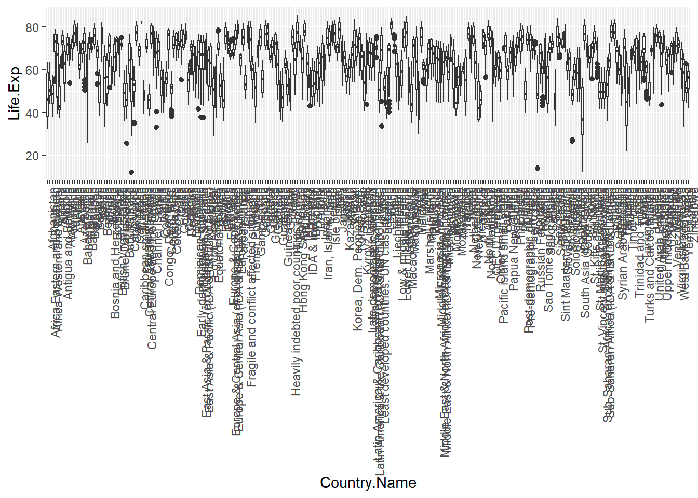
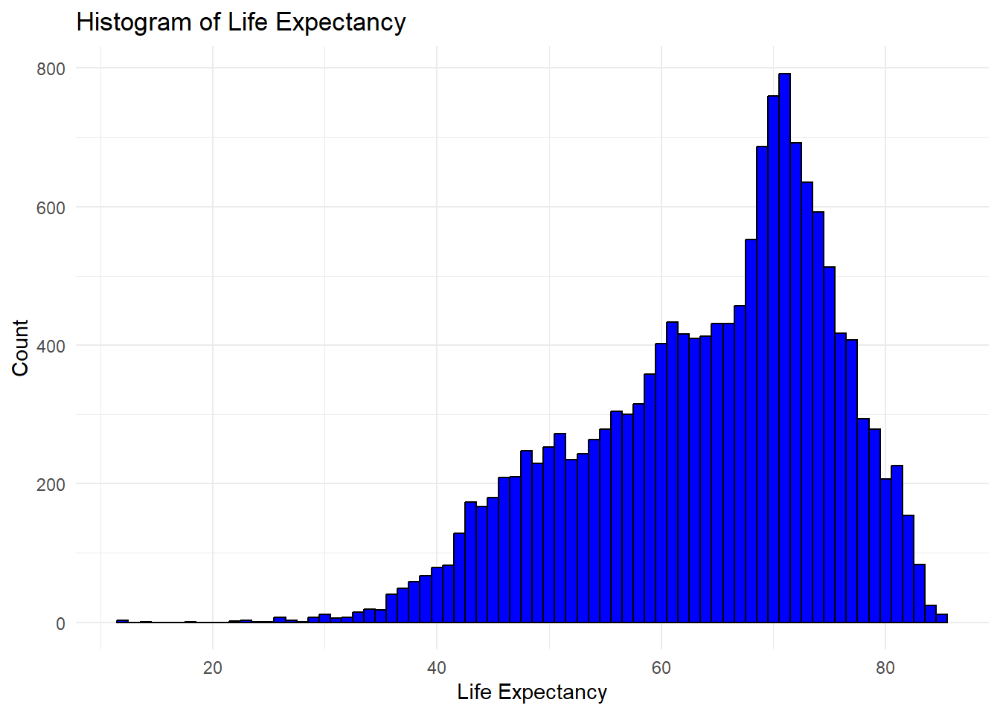
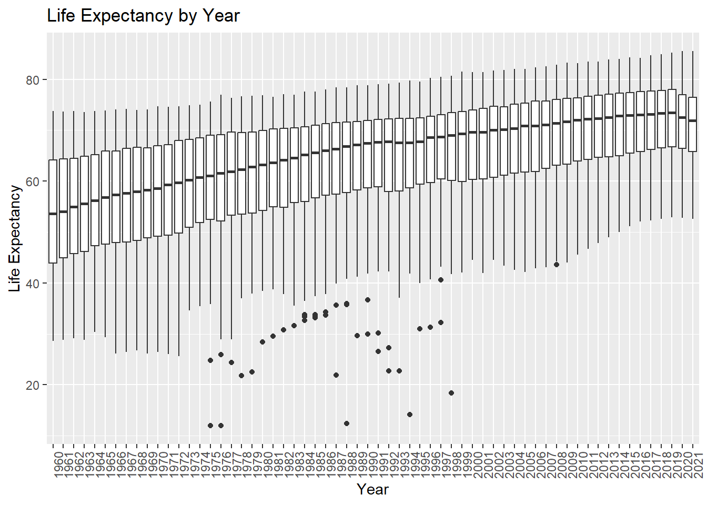
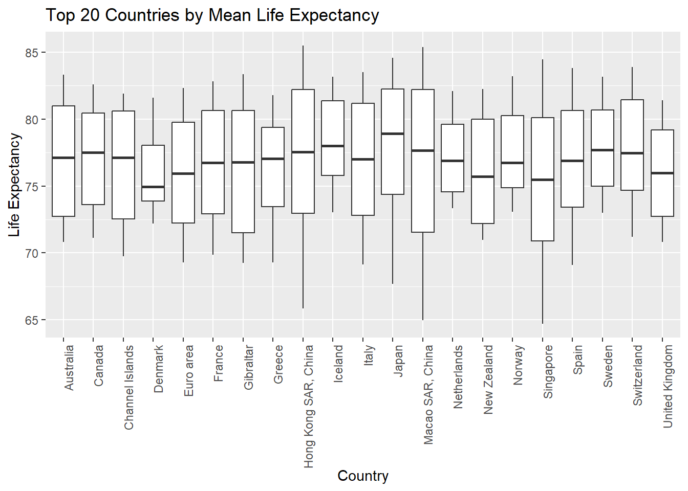
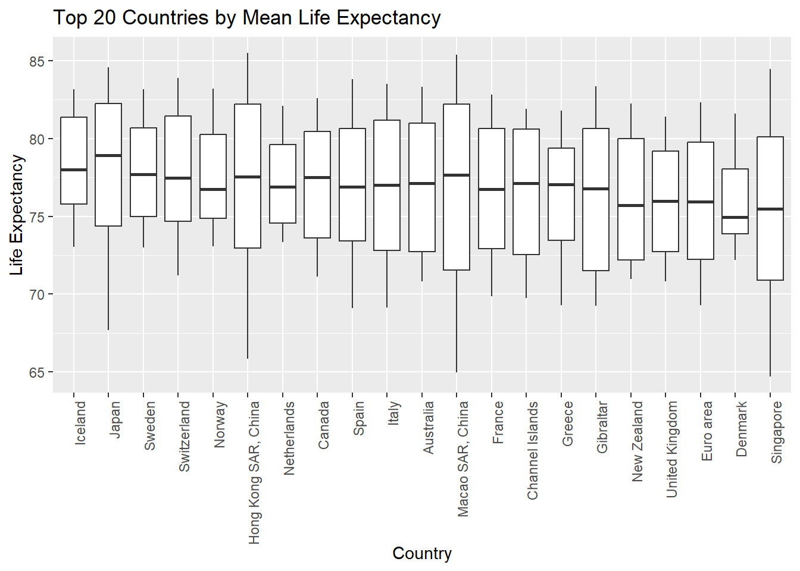
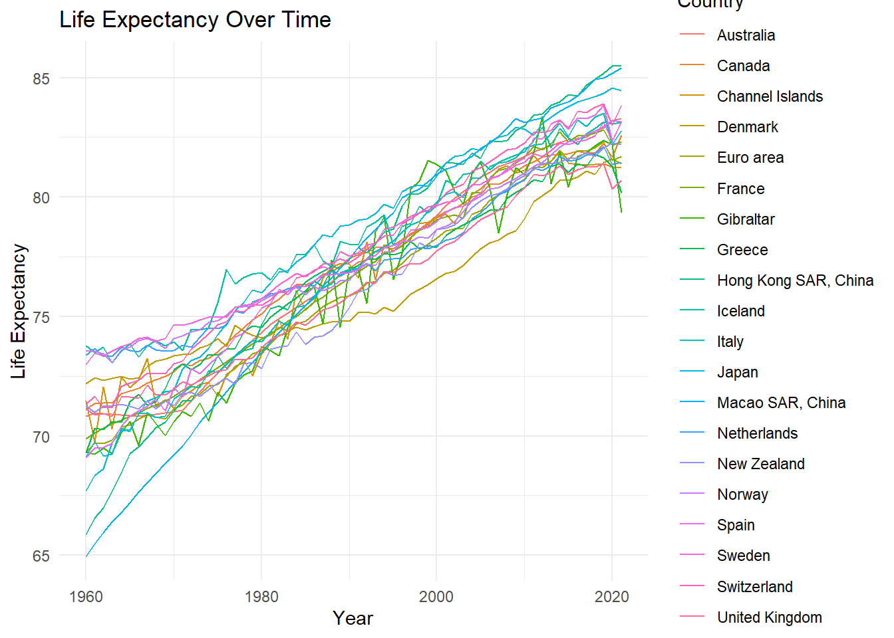
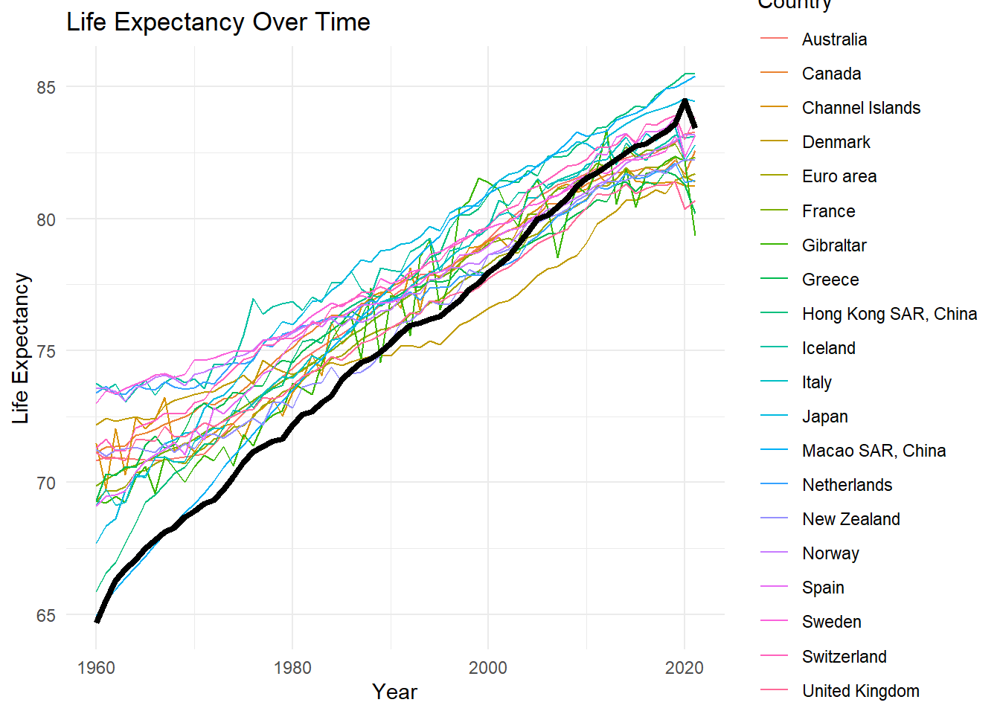

pacman::p_load(dplyr, tidyr, ggplot2)Introduction to Data Wrangling
Introduction
To start the course, this exercise would be a good refresher for me after not touching R for a few months.
Data Manipulation Packages
In R, dplyr and tidyr are simple yet powerful packages to manage data manipulation.
Within the core tidyverse library, the core packages used for data wrangling are
ggplot2: For data visualisation, plotting graphsdplyr: For data manipulation, such as filtering, selecting, mutating, summarising and arranging datatidyr: For organising data to ensure datasets can be manipulated easily
Understanding the Data
This exercise will leverage World Bank’s 2023 data.
data <- read.csv("2023_WorldBank.csv", stringsAsFactors = FALSE)
head(data) Country.Name Country.Code Indicator.Name
1 Hong Kong SAR, China HKG Life expectancy at birth, total (years)
2 Macao SAR, China MAC Life expectancy at birth, total (years)
3 Japan JPN Life expectancy at birth, total (years)
4 Liechtenstein LIE Life expectancy at birth, total (years)
5 Switzerland CHE Life expectancy at birth, total (years)
6 Korea, Rep. KOR Life expectancy at birth, total (years)
Indicator.Code X1960 X1961 X1962 X1963 X1964 X1965 X1966
1 SP.DYN.LE00.IN 65.86629 66.55888 66.97717 67.68573 68.44610 69.25122 69.53888
2 SP.DYN.LE00.IN 64.96500 65.48500 65.94600 66.38600 66.80000 67.19900 67.64700
3 SP.DYN.LE00.IN 67.69561 68.35195 68.63488 69.71244 70.20659 70.26683 70.91585
4 SP.DYN.LE00.IN NA NA NA NA NA NA NA
5 SP.DYN.LE00.IN 71.31341 71.64488 71.19610 71.18756 72.07780 72.20171 72.33561
6 SP.DYN.LE00.IN 54.32024 54.92400 55.51951 55.97488 57.17478 58.24049 59.50471
X1967 X1968 X1969 X1970 X1971 X1972 X1973 X1974
1 69.92544 70.35583 70.56856 71.04995 71.45854 71.45610 72.10976 72.61220
2 68.02800 68.44000 68.84500 69.19800 69.58200 70.04400 70.56800 70.99500
3 71.46610 71.61098 71.85805 71.91976 72.80902 73.15366 73.29512 73.67220
4 NA NA NA NA NA NA NA NA
5 72.63659 72.59024 72.61268 73.02024 73.13073 73.64439 73.94098 74.28707
6 61.28812 61.55900 62.05102 62.16341 62.61220 63.00976 63.40732 63.80488
X1975 X1976 X1977 X1978 X1979 X1980 X1981 X1982
1 73.36829 72.81951 73.31951 73.57561 73.67317 74.67317 75.32439 75.42927
2 71.41900 71.85000 72.26300 72.69000 73.07000 73.50400 73.93200 74.34200
3 74.24707 74.68659 75.25585 75.58463 76.10878 75.98902 76.39488 76.87366
4 NA NA NA NA NA NA NA NA
5 74.66561 74.78537 75.23805 75.18732 75.46610 75.45927 75.69317 76.03390
6 64.15366 64.50244 64.90000 65.19756 65.54634 66.04634 66.54634 67.09512
X1983 X1984 X1985 X1986 X1987 X1988 X1989 X1990
1 75.27561 76.02927 76.43415 76.68537 76.88293 77.08293 77.02927 77.38049
2 74.70300 75.08000 75.47800 75.86200 76.27200 76.60300 77.03500 77.42400
3 76.92195 77.29122 77.56049 78.01049 78.42951 78.34976 78.76854 78.83707
4 NA NA NA NA NA NA NA NA
5 76.03122 76.60854 76.73366 76.89902 77.19756 77.22659 77.42122 77.24244
6 67.54634 68.19512 68.79512 69.44634 69.99756 70.54878 71.04878 71.59756
X1991 X1992 X1993 X1994 X1995 X1996 X1997 X1998
1 77.88293 77.67805 78.03171 78.52927 78.68293 79.62683 80.12683 80.13171
2 77.90400 78.28000 78.63000 78.99300 79.34900 79.97100 80.16200 80.35200
3 79.03683 79.08024 79.30366 79.69683 79.53610 80.21976 80.42415 80.50146
4 NA NA NA 78.42195 77.39024 76.83659 76.04634 77.74634
5 77.51463 77.80610 78.08537 78.35000 78.41707 78.89610 79.07951 79.32439
6 72.04634 72.49756 72.99756 73.39756 73.70000 74.15122 74.60244 75.00488
X1999 X2000 X2001 X2002 X2003 X2004 X2005 X2006
1 80.38293 80.87805 81.42439 81.42683 81.37805 81.82927 81.62927 82.37561
2 80.65200 80.95900 81.17900 81.29300 81.50100 81.69100 82.03300 82.25700
3 80.46098 81.07610 81.41634 81.69073 81.76000 82.03024 81.95512 82.32195
4 79.10976 76.82683 79.27561 79.63659 79.96098 81.77073 80.66829 80.94878
5 79.58049 79.68049 80.18049 80.38537 80.53659 81.08780 81.23659 81.49024
6 75.40976 75.90976 76.41220 76.76585 77.21463 77.66585 78.16829 78.66829
X2007 X2008 X2009 X2010 X2011 X2012 X2013 X2014
1 82.32683 82.37561 82.77561 82.97805 83.42195 83.48049 83.83171 83.98049
2 82.54300 82.89300 83.27600 83.10900 83.22900 83.32600 83.72700 83.88300
3 82.50707 82.58756 82.93146 82.84268 82.59122 83.09610 83.33195 83.58780
4 81.29512 82.68293 81.50000 81.84146 81.79268 82.38293 82.26098 82.07317
5 81.74146 81.99268 82.04390 82.24634 82.69512 82.69756 82.79756 83.19756
6 79.11951 79.51707 79.96829 80.11707 80.56829 80.81951 81.27073 81.72195
X2015 X2016 X2017 X2018 X2019 X2020 X2021
1 84.27805 84.22683 84.68049 84.93415 85.18049 85.49756 85.49268
2 83.98400 84.23100 84.56300 84.92800 84.97800 85.18400 85.39900
3 83.79390 83.98488 84.09976 84.21098 84.35634 84.56000 84.44561
4 82.65610 82.25854 83.74634 83.04146 84.16098 81.65854 84.40244
5 82.89756 83.60244 83.55122 83.75366 83.90488 83.00000 83.85122
6 82.02439 82.27561 82.62683 82.62683 83.22683 83.42683 83.52683str(data)'data.frame': 266 obs. of 66 variables:
$ Country.Name : chr "Hong Kong SAR, China" "Macao SAR, China" "Japan" "Liechtenstein" ...
$ Country.Code : chr "HKG" "MAC" "JPN" "LIE" ...
$ Indicator.Name: chr "Life expectancy at birth, total (years)" "Life expectancy at birth, total (years)" "Life expectancy at birth, total (years)" "Life expectancy at birth, total (years)" ...
$ Indicator.Code: chr "SP.DYN.LE00.IN" "SP.DYN.LE00.IN" "SP.DYN.LE00.IN" "SP.DYN.LE00.IN" ...
$ X1960 : num 65.9 65 67.7 NA 71.3 ...
$ X1961 : num 66.6 65.5 68.4 NA 71.6 ...
$ X1962 : num 67 65.9 68.6 NA 71.2 ...
$ X1963 : num 67.7 66.4 69.7 NA 71.2 ...
$ X1964 : num 68.4 66.8 70.2 NA 72.1 ...
$ X1965 : num 69.3 67.2 70.3 NA 72.2 ...
$ X1966 : num 69.5 67.6 70.9 NA 72.3 ...
$ X1967 : num 69.9 68 71.5 NA 72.6 ...
$ X1968 : num 70.4 68.4 71.6 NA 72.6 ...
$ X1969 : num 70.6 68.8 71.9 NA 72.6 ...
$ X1970 : num 71 69.2 71.9 NA 73 ...
$ X1971 : num 71.5 69.6 72.8 NA 73.1 ...
$ X1972 : num 71.5 70 73.2 NA 73.6 ...
$ X1973 : num 72.1 70.6 73.3 NA 73.9 ...
$ X1974 : num 72.6 71 73.7 NA 74.3 ...
$ X1975 : num 73.4 71.4 74.2 NA 74.7 ...
$ X1976 : num 72.8 71.8 74.7 NA 74.8 ...
$ X1977 : num 73.3 72.3 75.3 NA 75.2 ...
$ X1978 : num 73.6 72.7 75.6 NA 75.2 ...
$ X1979 : num 73.7 73.1 76.1 NA 75.5 ...
$ X1980 : num 74.7 73.5 76 NA 75.5 ...
$ X1981 : num 75.3 73.9 76.4 NA 75.7 ...
$ X1982 : num 75.4 74.3 76.9 NA 76 ...
$ X1983 : num 75.3 74.7 76.9 NA 76 ...
$ X1984 : num 76 75.1 77.3 NA 76.6 ...
$ X1985 : num 76.4 75.5 77.6 NA 76.7 ...
$ X1986 : num 76.7 75.9 78 NA 76.9 ...
$ X1987 : num 76.9 76.3 78.4 NA 77.2 ...
$ X1988 : num 77.1 76.6 78.3 NA 77.2 ...
$ X1989 : num 77 77 78.8 NA 77.4 ...
$ X1990 : num 77.4 77.4 78.8 NA 77.2 ...
$ X1991 : num 77.9 77.9 79 NA 77.5 ...
$ X1992 : num 77.7 78.3 79.1 NA 77.8 ...
$ X1993 : num 78 78.6 79.3 NA 78.1 ...
$ X1994 : num 78.5 79 79.7 78.4 78.3 ...
$ X1995 : num 78.7 79.3 79.5 77.4 78.4 ...
$ X1996 : num 79.6 80 80.2 76.8 78.9 ...
$ X1997 : num 80.1 80.2 80.4 76 79.1 ...
$ X1998 : num 80.1 80.4 80.5 77.7 79.3 ...
$ X1999 : num 80.4 80.7 80.5 79.1 79.6 ...
$ X2000 : num 80.9 81 81.1 76.8 79.7 ...
$ X2001 : num 81.4 81.2 81.4 79.3 80.2 ...
$ X2002 : num 81.4 81.3 81.7 79.6 80.4 ...
$ X2003 : num 81.4 81.5 81.8 80 80.5 ...
$ X2004 : num 81.8 81.7 82 81.8 81.1 ...
$ X2005 : num 81.6 82 82 80.7 81.2 ...
$ X2006 : num 82.4 82.3 82.3 80.9 81.5 ...
$ X2007 : num 82.3 82.5 82.5 81.3 81.7 ...
$ X2008 : num 82.4 82.9 82.6 82.7 82 ...
$ X2009 : num 82.8 83.3 82.9 81.5 82 ...
$ X2010 : num 83 83.1 82.8 81.8 82.2 ...
$ X2011 : num 83.4 83.2 82.6 81.8 82.7 ...
$ X2012 : num 83.5 83.3 83.1 82.4 82.7 ...
$ X2013 : num 83.8 83.7 83.3 82.3 82.8 ...
$ X2014 : num 84 83.9 83.6 82.1 83.2 ...
$ X2015 : num 84.3 84 83.8 82.7 82.9 ...
$ X2016 : num 84.2 84.2 84 82.3 83.6 ...
$ X2017 : num 84.7 84.6 84.1 83.7 83.6 ...
$ X2018 : num 84.9 84.9 84.2 83 83.8 ...
$ X2019 : num 85.2 85 84.4 84.2 83.9 ...
$ X2020 : num 85.5 85.2 84.6 81.7 83 ...
$ X2021 : num 85.5 85.4 84.4 84.4 83.9 ...colnames(data) [1] "Country.Name" "Country.Code" "Indicator.Name" "Indicator.Code"
[5] "X1960" "X1961" "X1962" "X1963"
[9] "X1964" "X1965" "X1966" "X1967"
[13] "X1968" "X1969" "X1970" "X1971"
[17] "X1972" "X1973" "X1974" "X1975"
[21] "X1976" "X1977" "X1978" "X1979"
[25] "X1980" "X1981" "X1982" "X1983"
[29] "X1984" "X1985" "X1986" "X1987"
[33] "X1988" "X1989" "X1990" "X1991"
[37] "X1992" "X1993" "X1994" "X1995"
[41] "X1996" "X1997" "X1998" "X1999"
[45] "X2000" "X2001" "X2002" "X2003"
[49] "X2004" "X2005" "X2006" "X2007"
[53] "X2008" "X2009" "X2010" "X2011"
[57] "X2012" "X2013" "X2014" "X2015"
[61] "X2016" "X2017" "X2018" "X2019"
[65] "X2020" "X2021" summary(data) Country.Name Country.Code Indicator.Name Indicator.Code
Length:266 Length:266 Length:266 Length:266
Class :character Class :character Class :character Class :character
Mode :character Mode :character Mode :character Mode :character
X1960 X1961 X1962 X1963
Min. :28.66 Min. :28.84 Min. :29.12 Min. :28.83
1st Qu.:43.93 1st Qu.:45.34 1st Qu.:45.80 1st Qu.:46.17
Median :53.72 Median :54.32 Median :55.09 Median :55.57
Mean :53.55 Mean :54.19 Mean :54.83 Mean :55.13
3rd Qu.:64.18 3rd Qu.:64.51 3rd Qu.:64.58 3rd Qu.:64.90
Max. :73.76 Max. :73.65 Max. :73.72 Max. :73.56
NA's :14 NA's :13 NA's :13 NA's :14
X1964 X1965 X1966 X1967
Min. :30.42 Min. :29.29 Min. :26.08 Min. :26.41
1st Qu.:47.36 1st Qu.:47.62 1st Qu.:48.17 1st Qu.:48.09
Median :56.17 Median :56.84 Median :57.39 Median :57.83
Mean :55.74 Mean :56.00 Mean :56.44 Mean :56.86
3rd Qu.:65.35 3rd Qu.:65.96 3rd Qu.:66.07 3rd Qu.:66.52
Max. :73.73 Max. :73.87 Max. :74.08 Max. :74.12
NA's :14 NA's :14 NA's :13 NA's :13
X1968 X1969 X1970 X1971
Min. :26.71 Min. :26.09 Min. :26.40 Min. :26.00
1st Qu.:48.44 1st Qu.:49.17 1st Qu.:49.44 1st Qu.:49.50
Median :58.01 Median :58.38 Median :58.63 Median :59.35
Mean :57.18 Mean :57.42 Mean :57.74 Mean :58.05
3rd Qu.:66.76 3rd Qu.:66.70 3rd Qu.:67.48 3rd Qu.:67.97
Max. :74.01 Max. :74.08 Max. :74.65 Max. :74.62
NA's :13 NA's :13 NA's :13 NA's :13
X1972 X1973 X1974 X1975
Min. :25.61 Min. :34.56 Min. :35.43 Min. :11.99
1st Qu.:49.92 1st Qu.:51.08 1st Qu.:51.84 1st Qu.:52.52
Median :59.80 Median :60.27 Median :60.80 Median :61.08
Mean :58.55 Mean :59.16 Mean :59.42 Mean :59.68
3rd Qu.:68.32 3rd Qu.:68.51 3rd Qu.:68.78 3rd Qu.:69.17
Max. :74.72 Max. :74.87 Max. :74.98 Max. :75.58
NA's :13 NA's :12 NA's :13 NA's :13
X1976 X1977 X1978 X1979
Min. :12.01 Min. :24.43 Min. :21.84 Min. :22.53
1st Qu.:52.29 1st Qu.:53.37 1st Qu.:53.49 1st Qu.:54.05
Median :61.64 Median :62.15 Median :62.53 Median :62.89
Mean :59.95 Mean :60.59 Mean :60.98 Mean :61.31
3rd Qu.:69.39 3rd Qu.:69.74 3rd Qu.:69.99 3rd Qu.:69.73
Max. :76.97 Max. :76.37 Max. :76.65 Max. :76.77
NA's :13 NA's :13 NA's :11 NA's :12
X1980 X1981 X1982 X1983
Min. :28.45 Min. :29.57 Min. :30.82 Min. :31.64
1st Qu.:54.71 1st Qu.:55.38 1st Qu.:54.89 1st Qu.:56.33
Median :63.36 Median :63.83 Median :64.17 Median :64.63
Mean :61.74 Mean :62.09 Mean :62.33 Mean :62.62
3rd Qu.:70.01 3rd Qu.:70.36 3rd Qu.:70.44 3rd Qu.:70.51
Max. :76.85 Max. :76.52 Max. :77.04 Max. :76.92
NA's :11 NA's :11 NA's :11 NA's :11
X1984 X1985 X1986 X1987
Min. :32.67 Min. :33.15 Min. :33.63 Min. :21.91
1st Qu.:56.41 1st Qu.:56.93 1st Qu.:57.55 1st Qu.:57.60
Median :65.24 Median :65.69 Median :66.14 Median :66.43
Mean :62.93 Mean :63.22 Mean :63.67 Mean :63.93
3rd Qu.:70.76 3rd Qu.:70.98 3rd Qu.:71.42 3rd Qu.:71.50
Max. :77.58 Max. :77.60 Max. :78.01 Max. :78.43
NA's :11 NA's :11 NA's :10 NA's :10
X1988 X1989 X1990 X1991
Min. :12.41 Min. :29.68 Min. :29.93 Min. :26.57
1st Qu.:57.77 1st Qu.:58.32 1st Qu.:58.72 1st Qu.:59.05
Median :66.91 Median :67.28 Median :67.63 Median :67.77
Mean :64.04 Mean :64.52 Mean :64.72 Mean :64.84
3rd Qu.:71.61 3rd Qu.:71.76 3rd Qu.:71.95 3rd Qu.:72.15
Max. :78.35 Max. :78.77 Max. :78.84 Max. :79.04
NA's :10 NA's :10 NA's :8 NA's :9
X1992 X1993 X1994 X1995
Min. :22.72 Min. :22.70 Min. :14.10 Min. :30.95
1st Qu.:58.55 1st Qu.:58.42 1st Qu.:59.17 1st Qu.:59.52
Median :67.83 Median :67.72 Median :67.84 Median :68.17
Mean :64.86 Mean :65.07 Mean :65.38 Mean :65.57
3rd Qu.:72.31 3rd Qu.:72.45 3rd Qu.:72.58 3rd Qu.:72.54
Max. :79.08 Max. :79.30 Max. :79.70 Max. :79.54
NA's :9 NA's :9 NA's :8 NA's :7
X1996 X1997 X1998 X1999
Min. :31.30 Min. :32.24 Min. :18.39 Min. :42.07
1st Qu.:60.07 1st Qu.:60.62 1st Qu.:60.61 1st Qu.:60.80
Median :68.73 Median :68.94 Median :69.10 Median :69.35
Mean :65.79 Mean :66.01 Mean :66.10 Mean :66.48
3rd Qu.:72.84 3rd Qu.:73.08 3rd Qu.:73.48 3rd Qu.:73.67
Max. :80.22 Max. :80.42 Max. :80.66 Max. :81.53
NA's :8 NA's :8 NA's :8 NA's :8
X2000 X2001 X2002 X2003
Min. :44.52 Min. :41.96 Min. :44.49 Min. :43.35
1st Qu.:60.90 1st Qu.:60.85 1st Qu.:61.24 1st Qu.:61.70
Median :69.74 Median :69.89 Median :70.32 Median :70.31
Mean :66.95 Mean :67.26 Mean :67.53 Mean :67.82
3rd Qu.:74.04 3rd Qu.:74.39 3rd Qu.:74.71 3rd Qu.:74.88
Max. :81.37 Max. :81.42 Max. :81.69 Max. :81.76
NA's :7 NA's :8 NA's :8 NA's :8
X2004 X2005 X2006 X2007
Min. :42.54 Min. :42.12 Min. :42.91 Min. :43.12
1st Qu.:61.78 1st Qu.:62.14 1st Qu.:62.55 1st Qu.:62.80
Median :70.70 Median :71.04 Median :71.13 Median :71.27
Mean :68.18 Mean :68.50 Mean :68.87 Mean :69.18
3rd Qu.:75.43 3rd Qu.:75.48 3rd Qu.:75.82 3rd Qu.:75.86
Max. :82.03 Max. :82.03 Max. :82.38 Max. :82.54
NA's :8 NA's :7 NA's :8 NA's :8
X2008 X2009 X2010 X2011
Min. :43.57 Min. :44.03 Min. :45.60 Min. :46.69
1st Qu.:63.24 1st Qu.:63.84 1st Qu.:64.09 1st Qu.:64.67
Median :71.47 Median :71.83 Median :72.12 Median :72.37
Mean :69.50 Mean :69.91 Mean :70.22 Mean :70.62
3rd Qu.:76.36 3rd Qu.:76.59 3rd Qu.:76.73 3rd Qu.:76.76
Max. :82.89 Max. :83.28 Max. :83.11 Max. :83.42
NA's :8 NA's :8 NA's :8 NA's :8
X2012 X2013 X2014 X2015
Min. :47.84 Min. :49.00 Min. :50.03 Min. :51.10
1st Qu.:64.97 1st Qu.:65.09 1st Qu.:65.36 1st Qu.:65.74
Median :72.43 Median :72.70 Median :72.86 Median :72.99
Mean :70.92 Mean :71.19 Mean :71.47 Mean :71.67
3rd Qu.:77.06 3rd Qu.:77.14 3rd Qu.:77.40 3rd Qu.:77.48
Max. :83.48 Max. :83.83 Max. :83.98 Max. :84.28
NA's :8 NA's :8 NA's :8 NA's :8
X2016 X2017 X2018 X2019
Min. :52.04 Min. :52.30 Min. :52.55 Min. :52.91
1st Qu.:66.01 1st Qu.:66.58 1st Qu.:66.53 1st Qu.:66.99
Median :73.20 Median :73.56 Median :73.57 Median :73.56
Mean :71.97 Mean :72.20 Mean :72.41 Mean :72.63
3rd Qu.:77.65 3rd Qu.:77.79 3rd Qu.:77.91 3rd Qu.:78.00
Max. :84.23 Max. :84.68 Max. :84.93 Max. :85.18
NA's :8 NA's :8 NA's :9 NA's :9
X2020 X2021
Min. :52.78 Min. :52.52
1st Qu.:66.77 1st Qu.:66.07
Median :72.58 Median :71.90
Mean :71.98 Mean :71.37
3rd Qu.:76.99 3rd Qu.:76.46
Max. :85.50 Max. :85.49
NA's :9 NA's :9 Data Cleaning
Some columns are not meaningful for analysis. Hence, columns “Country.Code”,“Indicator.Name”, “Indicator.Code” can be dropped.
Method 1. Using dplyr
data <- dplyr::select(data, -c(Country.Code, Indicator.Name, Indicator.Code))Method 2. Using baseR
data <- data[, !names(data) %in% c("Country.Code", "Indicator.Name", "Indicator.Code")]The data appears to be in wide format, each year is in a column. We can use tidyr to make this into a tidy data and recode column names as the year of observation.
tidyr is another R package from the tidyverse family, designed to help users clean and organise data into a tidy format. The primary goal of tidyr is to make data “tidy,” such that each variable is a column, each observation is a row, and each value is a single cell. tidyr works closely with other packages like dplyr to simplify data manipulation workflows.
Key functions of tidyr include:
gather()/pivot_longer(): Converts wide data (where columns are variables) into long format (where each row represents a single observation of a variable)spread()/pivot_wider(): The reverse of pivot_longer(), it converts long data into wide formatseparate(): Splits a single column into multiple columns based on a delimiter.unite(): Combines multiple columns into a single column.
Pivot to tidy format where each Column is a Variable and each Row is an Observation (Life Expentancy):
data_long <- pivot_longer(data,
cols = X1960:X2021,
names_to = "Year",
values_to = "Life.Exp") The ‘Year’ column will have year names as characters starting with X. We remove the “X” and convert them to integers
data_long$Year <- as.integer(sub("X", "", data_long$Year))
str(data_long) tibble [16,492 × 3] (S3: tbl_df/tbl/data.frame)
$ Country.Name: chr [1:16492] "Hong Kong SAR, China" "Hong Kong SAR, China" "Hong Kong SAR, China" "Hong Kong SAR, China" ...
$ Year : int [1:16492] 1960 1961 1962 1963 1964 1965 1966 1967 1968 1969 ...
$ Life.Exp : num [1:16492] 65.9 66.6 67 67.7 68.4 ...colnames(data_long)[1] "Country.Name" "Year" "Life.Exp" Data Manipulation
dplyr is an R package used for data manipulation and transformation. It is part of the tidyverse, a collection of R packages designed for data science. dplyr provides a set of functions that make it easier to work with data frames and manipulate them in a clear, concise, and efficient way.
The key features of dplyr include:
Pipes (
%>%): Allows chaining multiple operations in a readable manner.Core Functions:
select(): Choose columns.filter(): Filter rows based on conditions.mutate(): Create new columns or modify existing ones.summarize(): Aggregate data, often combined with group_by() to create group-wise summaries.group_by(): Group data by one or more variables, which is useful for applying functions likesummarize().
Check for any missing values:
data_long %>% summarise_all(~ sum(is.na(.))) # A tibble: 1 × 3
Country.Name Year Life.Exp
<int> <int> <int>
1 0 0 626There are 626 rows with missing values for Life.Exp. We can check the unique values for Country.Name and Year first.
unique(data_long$Country.Name)
## [1] "Hong Kong SAR, China"
## [2] "Macao SAR, China"
## [3] "Japan"
## [4] "Liechtenstein"
## [5] "Switzerland"
## [6] "Korea, Rep."
## [7] "Faroe Islands"
## [8] "Singapore"
## [9] "Australia"
## [10] "Spain"
## [11] "Norway"
## [12] "Sweden"
## [13] "Iceland"
## [14] "Malta"
## [15] "Italy"
## [16] "Luxembourg"
## [17] "Canada"
## [18] "Israel"
## [19] "France"
## [20] "New Zealand"
## [21] "Ireland"
## [22] "Finland"
## [23] "Belgium"
## [24] "Euro area"
## [25] "Netherlands"
## [26] "Denmark"
## [27] "Austria"
## [28] "Channel Islands"
## [29] "Cyprus"
## [30] "Portugal"
## [31] "Germany"
## [32] "Slovenia"
## [33] "United Kingdom"
## [34] "Isle of Man"
## [35] "European Union"
## [36] "St. Martin (French part)"
## [37] "Greece"
## [38] "Puerto Rico"
## [39] "Virgin Islands (U.S.)"
## [40] "High income"
## [41] "Maldives"
## [42] "Post-demographic dividend"
## [43] "French Polynesia"
## [44] "Gibraltar"
## [45] "Bermuda"
## [46] "Qatar"
## [47] "New Caledonia"
## [48] "Chile"
## [49] "Bahrain"
## [50] "Thailand"
## [51] "OECD members"
## [52] "United Arab Emirates"
## [53] "Kuwait"
## [54] "Antigua and Barbuda"
## [55] "China"
## [56] "Barbados"
## [57] "Czechia"
## [58] "Costa Rica"
## [59] "North America"
## [60] "Saudi Arabia"
## [61] "Kosovo"
## [62] "Estonia"
## [63] "Guam"
## [64] "Europe & Central Asia"
## [65] "Albania"
## [66] "Croatia"
## [67] "Sri Lanka"
## [68] "East Asia & Pacific"
## [69] "Algeria"
## [70] "Late-demographic dividend"
## [71] "United States"
## [72] "Panama"
## [73] "Turkiye"
## [74] "Poland"
## [75] "East Asia & Pacific (IDA & IBRD countries)"
## [76] "East Asia & Pacific (excluding high income)"
## [77] "Uruguay"
## [78] "Argentina"
## [79] "Bosnia and Herzegovina"
## [80] "Lebanon"
## [81] "Grenada"
## [82] "Central Europe and the Baltics"
## [83] "Malaysia"
## [84] "Slovak Republic"
## [85] "Upper middle income"
## [86] "Brunei Darussalam"
## [87] "Aruba"
## [88] "Turks and Caicos Islands"
## [89] "North Macedonia"
## [90] "British Virgin Islands"
## [91] "Hungary"
## [92] "Lithuania"
## [93] "Jordan"
## [94] "Cabo Verde"
## [95] "Morocco"
## [96] "Sint Maarten (Dutch part)"
## [97] "Iran, Islamic Rep."
## [98] "Nicaragua"
## [99] "Montenegro"
## [100] "Tunisia"
## [101] "Cuba"
## [102] "Mauritius"
## [103] "Ecuador"
## [104] "Vietnam"
## [105] "West Bank and Gaza"
## [106] "Seychelles"
## [107] "Korea, Dem. People's Rep."
## [108] "Latvia"
## [109] "Trinidad and Tobago"
## [110] "Romania"
## [111] "Colombia"
## [112] "Dominica"
## [113] "Samoa"
## [114] "Brazil"
## [115] "Middle East & North Africa"
## [116] "Serbia"
## [117] "Dominican Republic"
## [118] "Oman"
## [119] "Bangladesh"
## [120] "Peru"
## [121] "Belarus"
## [122] "Latin America & Caribbean"
## [123] "IBRD only"
## [124] "Latin America & the Caribbean (IDA & IBRD countries)"
## [125] "Syrian Arab Republic"
## [126] "Armenia"
## [127] "Libya"
## [128] "Latin America & Caribbean (excluding high income)"
## [129] "Kyrgyz Republic"
## [130] "Middle East & North Africa (excluding high income)"
## [131] "Middle East & North Africa (IDA & IBRD countries)"
## [132] "Europe & Central Asia (IDA & IBRD countries)"
## [133] "Bhutan"
## [134] "Georgia"
## [135] "St. Kitts and Nevis"
## [136] "Bahamas, The"
## [137] "Tajikistan"
## [138] "Bulgaria"
## [139] "Europe & Central Asia (excluding high income)"
## [140] "World"
## [141] "Greenland"
## [142] "St. Lucia"
## [143] "Caribbean small states"
## [144] "Tonga"
## [145] "Mongolia"
## [146] "Uzbekistan"
## [147] "Arab World"
## [148] "El Salvador"
## [149] "Micronesia, Fed. Sts."
## [150] "Venezuela, RB"
## [151] "Middle income"
## [152] "Jamaica"
## [153] "Belize"
## [154] "Vanuatu"
## [155] "Iraq"
## [156] "Solomon Islands"
## [157] "Suriname"
## [158] "Paraguay"
## [159] "Kazakhstan"
## [160] "Egypt, Arab Rep."
## [161] "Mexico"
## [162] "Honduras"
## [163] "IDA & IBRD total"
## [164] "Low & middle income"
## [165] "Ukraine"
## [166] "St. Vincent and the Grenadines"
## [167] "Cambodia"
## [168] "Azerbaijan"
## [169] "Russian Federation"
## [170] "Philippines"
## [171] "Turkmenistan"
## [172] "Guatemala"
## [173] "Pacific island small states"
## [174] "Moldova"
## [175] "Early-demographic dividend"
## [176] "Nepal"
## [177] "Lao PDR"
## [178] "Small states"
## [179] "Timor-Leste"
## [180] "Sao Tome and Principe"
## [181] "South Asia"
## [182] "South Asia (IDA & IBRD)"
## [183] "Indonesia"
## [184] "Kiribati"
## [185] "India"
## [186] "Fiji"
## [187] "Senegal"
## [188] "Other small states"
## [189] "Lower middle income"
## [190] "Eritrea"
## [191] "Tanzania"
## [192] "Pakistan"
## [193] "Rwanda"
## [194] "Gabon"
## [195] "Guyana"
## [196] "Myanmar"
## [197] "Papua New Guinea"
## [198] "Marshall Islands"
## [199] "Sudan"
## [200] "Ethiopia"
## [201] "IDA only"
## [202] "Tuvalu"
## [203] "Madagascar"
## [204] "Mauritania"
## [205] "Least developed countries: UN classification"
## [206] "Ghana"
## [207] "Yemen, Rep."
## [208] "Bolivia"
## [209] "Nauru"
## [210] "Congo, Rep."
## [211] "Comoros"
## [212] "IDA total"
## [213] "Haiti"
## [214] "Malawi"
## [215] "Uganda"
## [216] "Low income"
## [217] "Africa Eastern and Southern"
## [218] "South Africa"
## [219] "Djibouti"
## [220] "Heavily indebted poor countries (HIPC)"
## [221] "Gambia, The"
## [222] "Afghanistan"
## [223] "Burundi"
## [224] "Angola"
## [225] "Togo"
## [226] "Niger"
## [227] "Kenya"
## [228] "Fragile and conflict affected situations"
## [229] "Zambia"
## [230] "Botswana"
## [231] "Liberia"
## [232] "IDA blend"
## [233] "Equatorial Guinea"
## [234] "Cameroon"
## [235] "Sub-Saharan Africa"
## [236] "Sub-Saharan Africa (IDA & IBRD countries)"
## [237] "Sub-Saharan Africa (excluding high income)"
## [238] "Sierra Leone"
## [239] "Pre-demographic dividend"
## [240] "Benin"
## [241] "Guinea-Bissau"
## [242] "Mozambique"
## [243] "Burkina Faso"
## [244] "Namibia"
## [245] "Zimbabwe"
## [246] "Congo, Dem. Rep."
## [247] "Mali"
## [248] "Guinea"
## [249] "Cote d'Ivoire"
## [250] "Eswatini"
## [251] "Africa Western and Central"
## [252] "Somalia"
## [253] "South Sudan"
## [254] "Central African Republic"
## [255] "Lesotho"
## [256] "Nigeria"
## [257] "Chad"
## [258] "Andorra"
## [259] "American Samoa"
## [260] "Curacao"
## [261] "Cayman Islands"
## [262] "Not classified"
## [263] "Monaco"
## [264] "Northern Mariana Islands"
## [265] "Palau"
## [266] "San Marino"
unique(data_long$Year)
## [1] 1960 1961 1962 1963 1964 1965 1966 1967 1968 1969 1970 1971 1972 1973 1974
## [16] 1975 1976 1977 1978 1979 1980 1981 1982 1983 1984 1985 1986 1987 1988 1989
## [31] 1990 1991 1992 1993 1994 1995 1996 1997 1998 1999 2000 2001 2002 2003 2004
## [46] 2005 2006 2007 2008 2009 2010 2011 2012 2013 2014 2015 2016 2017 2018 2019
## [61] 2020 2021Since all the values look correct, we check the missing value across each Country for the Life.Exp column:
temp_df <-data_long %>%
group_by(Country.Name) %>%
summarise(Missing_Life_Exp = sum(is.na(Life.Exp)))
temp_df # A tibble: 266 × 2
Country.Name Missing_Life_Exp
<chr> <int>
1 Afghanistan 0
2 Africa Eastern and Southern 0
3 Africa Western and Central 0
4 Albania 0
5 Algeria 0
6 American Samoa 62
7 Andorra 62
8 Angola 0
9 Antigua and Barbuda 0
10 Arab World 0
# ℹ 256 more rowsTo show only the rows with non-zero Missing Counts:
data_long %>% group_by(Country.Name) %>% summarise(Missing_Life_Exp = sum(is.na(Life.Exp))) %>% filter(Missing_Life_Exp > 0) # A tibble: 15 × 2
Country.Name Missing_Life_Exp
<chr> <int>
1 American Samoa 62
2 Andorra 62
3 Cayman Islands 61
4 Curacao 5
5 Faroe Islands 24
6 Greenland 18
7 Israel 4
8 Liechtenstein 34
9 Monaco 62
10 Northern Mariana Islands 62
11 Not classified 62
12 Palau 58
13 San Marino 62
14 Seychelles 20
15 West Bank and Gaza 30Here we remove all rows with missing Life.Exp as they are not important for our analysis. na.omit is using baseR.
data_long <- na.omit(data_long)
length(unique(data_long$Country.Name)) [1] 260length(unique(data_long$Year)) [1] 62data_long # A tibble: 15,866 × 3
Country.Name Year Life.Exp
<chr> <int> <dbl>
1 Hong Kong SAR, China 1960 65.9
2 Hong Kong SAR, China 1961 66.6
3 Hong Kong SAR, China 1962 67.0
4 Hong Kong SAR, China 1963 67.7
5 Hong Kong SAR, China 1964 68.4
6 Hong Kong SAR, China 1965 69.3
7 Hong Kong SAR, China 1966 69.5
8 Hong Kong SAR, China 1967 69.9
9 Hong Kong SAR, China 1968 70.4
10 Hong Kong SAR, China 1969 70.6
# ℹ 15,856 more rowsOutlier Detection with boxplot
ggplot(data_long, aes(x = Country.Name, y = Life.Exp)) +
geom_boxplot() +
theme(axis.text.x = element_text(angle = 90, hjust = 1)) 
Outlier Detection: There are 260 countries in the remaining dataset. However, it is hard to visualise with a boxplot.
Tukey Fence Method
Here we use Tukey Outlier Detection method to identify the countries. We use the Tukey fence method to help to identify the countries with outliers.
Q1Q3Quantiles <- data_long %>%
group_by(Country.Name) %>%
summarize(Q1 = quantile(Life.Exp, 0.25, na.rm = TRUE),
Q3 = quantile(Life.Exp, 0.75, na.rm = TRUE),
IQR = IQR(Life.Exp, na.rm = TRUE)) %>%
mutate(Lower_Bound = Q1 - 1.5 * IQR,
Upper_Bound = Q3 + 1.5 * IQR)
Q1Q3Quantiles # A tibble: 260 × 6
Country.Name Q1 Q3 IQR Lower_Bound Upper_Bound
<chr> <dbl> <dbl> <dbl> <dbl> <dbl>
1 Afghanistan 38.3 58.6 20.4 7.72 89.1
2 Africa Eastern and Southern 47.9 54.9 7.01 37.4 65.4
3 Africa Western and Central 44.4 52.7 8.31 31.9 65.2
4 Albania 68.4 76.6 8.16 56.2 88.8
5 Algeria 47.2 72.3 25.0 9.66 110.
6 Angola 41.2 52.2 11.0 24.8 68.6
7 Antigua and Barbuda 72.1 75.8 3.74 66.5 81.4
8 Arab World 53.8 68.5 14.7 31.8 90.5
9 Argentina 67.1 75.1 7.99 55.1 87.1
10 Armenia 64.9 71.9 7.08 54.2 82.6
# ℹ 250 more rowsdata_long_with_bounds <- left_join(data_long, Q1Q3Quantiles, by = "Country.Name")
outliers_detected <- data_long_with_bounds %>%
filter(Life.Exp < Lower_Bound | Life.Exp > Upper_Bound) After checking the list of countries with outliers, they can be removed for our analysis. This decision depends on what is the objective of our analysis. Here we do not remove them.
Next we check the summary statistics for the data across all countries. We again use group_by and summarize functions in dplyr. We can then use the summary statistics table to check with domain experts on the validity of the data.
country_summary_stats <- data_long %>%
group_by(Country.Name) %>%
summarize(Mean = mean(Life.Exp, na.rm = TRUE),
Median = median(Life.Exp, na.rm = TRUE),
SD = sd(Life.Exp, na.rm = TRUE),
Min = min(Life.Exp, na.rm = TRUE),
Max = max(Life.Exp, na.rm = TRUE),
Count = n(),
Missing = sum(is.na(Life.Exp)))
print(country_summary_stats) # A tibble: 260 × 8
Country.Name Mean Median SD Min Max Count Missing
<chr> <dbl> <dbl> <dbl> <dbl> <dbl> <int> <int>
1 Afghanistan 47.9 46.3 10.8 32.5 63.6 62 0
2 Africa Eastern and Southern 51.9 50.3 5.66 44.1 63.8 62 0
3 Africa Western and Central 48.3 48.7 5.72 37.8 57.6 62 0
4 Albania 71.5 73.3 6.58 54.4 79.3 62 0
5 Algeria 61.4 67.4 12.9 39.3 76.5 62 0
6 Angola 46.7 42.8 7.92 37.3 62.4 62 0
7 Antigua and Barbuda 73.2 73.5 4.11 61.6 78.8 62 0
8 Arab World 61.1 63.1 8.41 45.0 71.8 62 0
9 Argentina 71.1 72.1 4.37 64.0 77.3 62 0
10 Armenia 68.3 68.7 4.41 53.9 75.4 62 0
# ℹ 250 more rowslength(unique(data_long$Country.Name))[1] 260There should be 62 years of data for each country. We remove countries with less than 62 years of data. The pull() function extracts a specific column from the filtered data. Here, it pulls the values of the Country.Name column from the filtered rows where Count is less than 62.
- Filter out country names with Count < 62
countries_to_remove <- country_summary_stats %>%
filter(Count < 62) %>%
pull(Country.Name)
countries_to_remove[1] "Cayman Islands" "Curacao" "Faroe Islands"
[4] "Greenland" "Israel" "Liechtenstein"
[7] "Palau" "Seychelles" "West Bank and Gaza"- Filter out these countries from data_long
data_long_filtered <- data_long %>%
filter(!Country.Name %in% countries_to_remove)
length(unique(data_long_filtered$Country.Name))[1] 251We can also plot some charts using ggplot to visualize the data and use it to discuss with domain experts. We can plot with ggplot:
1. Histogram of Life.Exp for all the data
2. Boxplot of Life.Exp by Year
3. Boxplot of Life.Exp by Country for selected Countries
4. Time series plots for selected countries
# Histogram
ggplot(data_long_filtered, aes(x = Life.Exp)) +
geom_histogram(binwidth = 1, fill = "blue", color = "black") +
theme_minimal() +
labs(title = "Histogram of Life Expectancy", x = "Life Expectancy", y = "Count")
# Boxplot of Life.Exp by Year
ggplot(data_long_filtered, aes(x = as.factor(Year), y = Life.Exp)) +
geom_boxplot() +
theme(axis.text.x = element_text(angle = 90)) +
labs(title = "Life Expectancy by Year", x = "Year", y = "Life Expectancy") 
Boxplot of Life.Exp by Country for top 20 highest Mean Life Expectancy across the years
1. Extract the Top 20 countries’ Country.Name with dplyr
top_20 <- data_long_filtered %>% group_by(Country.Name) %>%
summarize(MeanLifeExp = mean(Life.Exp, na.rm = TRUE)) %>%
arrange(desc(MeanLifeExp)) %>% top_n(20, MeanLifeExp) %>%
pull(Country.Name)
top_20 [1] "Iceland" "Japan" "Sweden"
[4] "Switzerland" "Norway" "Hong Kong SAR, China"
[7] "Netherlands" "Canada" "Spain"
[10] "Italy" "Australia" "Macao SAR, China"
[13] "France" "Channel Islands" "Greece"
[16] "Gibraltar" "New Zealand" "United Kingdom"
[19] "Euro area" "Denmark" 2. Filter these countries with dplyr
data_top_20 <- data_long_filtered %>%
filter(Country.Name %in% top_20)
unique(data_top_20$Country.Name) [1] "Hong Kong SAR, China" "Macao SAR, China" "Japan"
[4] "Switzerland" "Australia" "Spain"
[7] "Norway" "Sweden" "Iceland"
[10] "Italy" "Canada" "France"
[13] "New Zealand" "Euro area" "Netherlands"
[16] "Denmark" "Channel Islands" "United Kingdom"
[19] "Greece" "Gibraltar" data_top_20[data_top_20$Country.Name=='Singapore',] # A tibble: 0 × 3
# ℹ 3 variables: Country.Name <chr>, Year <int>, Life.Exp <dbl>data_top_20_sg <- data_long_filtered %>%
filter(Country.Name %in% top_20 | Country.Name == 'Singapore') 3. Plot the Boxplot for Top 20 countries and Singapore
ggplot(data_top_20_sg, aes(x = Country.Name, y = Life.Exp)) + geom_boxplot() + theme(axis.text.x = element_text(angle = 90, hjust = 1)) + labs(title = "Top 20 Countries by Mean Life Expectancy", x = "Country", y = "Life Expectancy")
# Reorder by descending mean Life.Exp (-Life,Exp for descending)
ggplot(data_top_20_sg, aes(x = reorder(Country.Name, -Life.Exp, FUN = mean), y = Life.Exp)) + geom_boxplot() + theme(axis.text.x = element_text(angle = 90, hjust = 1)) + labs(title = "Top 20 Countries by Mean Life Expectancy", x = "Country", y = "Life Expectancy")
We can also plot time series for the Top 20 countries to visualize the trends.
# Create the time series plot
tseries <-ggplot(data_top_20, aes(x = Year, y = Life.Exp, color = Country.Name)) + geom_line() +
theme_minimal() +
labs(title = "Life Expectancy Over Time", x = "Year", y = "Life Expectancy", color = "Country")
tseries 
tseries + geom_line(data = filter(data_top_20_sg, Country.Name == "Singapore"), aes(x = Year, y = Life.Exp), color = "black", size = 1.5) 
Congratulations! We have completed a quick introduction to dplyr, tidyr and ggplot. Remember, the best way to learn is to get your hands dirty, google for sample codes, read R documentation and learn when you are trying to solve problems.